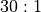
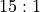
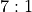
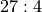
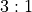

Throw Builder Class¶
This chapter identifies some more subtleties of bets in Craps, and proposes some rather involved design rework to resolve the issues that are raised.
An instance of the Dice class is a container
for a set of Throw instances. Each Throw instance contains a
set of Outcome instances that are the basis for bets.
One additional feature is that a Throw object will change the state of the game.
We must be sure to account for this additional responsibility.
A further problem is that the Outcome object doesn’t have a fixed
payout in Craps. This will alter the design for the Outcome class yet again
to handle this feature.
We’ll look at this in detail in Throw Builder Analysis. We’ll tackle the variable odds feature in Outcomes with Variable Odds.
This will lead us to refactor the Outcome class. We’ll look at this in
Refactoring The Outcome Hierarchy.
We’ll digress into some other design considerations in Soapbox on Subclasses, Soapbox on Architecture, and Throw Builder Questions and Answers.
After considering the alternatives, we’ll look at two approaches to the rework:
In Design Light we’ll try to minimize the rework. The details will be in Minimal Outcome Rework.
In Design Heavy, we’ll acknowledge that there is no “simple” solution. We’ll look at the details in:
After the rework is in place, qe can then look at the common design issues. We’ll cover these in Common Design. This will include OutcomeField Design, OutcomeHorn Design, and ThrowBuilder Class Design.
In Throw-Builder Deliverables we’ll enumerate the deliverables for this chapter.
We’ll present sidebars on the proper design of subclasses and the proper architecture for the packages that make up an application. Additionally, we’ll provide a brief FAQ on the design issues raised.
Throw Builder Analysis¶
Enumerating each Outcome instance in the 36 Throw instances
could be a tedious undertaking. We’ll
design a Builder to enumerate all of the Throw instances
and their associated list of Outcome instances. This will build the
Dice, finishing the elements we deferred from Dice Class.
The 36 ways the dice fall can be summarized into 15 kinds of Throw objects,
with a fixed distribution of probabilities. We have two ways to enumerate these.
We could develop a Builder class that enumerates the 36 possible
Throwinstances, assigning the appropriate attribute values to each object. This will create a number of duplicates: in Craps, dice showing(1, 2)are equivalent to dice showing(2, 1)An alternative is for a Builder class to step through the 15 kinds of
Throwinstances, creating the proper number of instances of each kind. There is one instance of(1, 1), two instances of(1, 2), etc.
We looked at this in Creating A Dice Frequency Distribution. Because of the vast number of
one-off special cases (e.g. hardways outcomes), it seems simpler to
examine each of the 36 pairs of dice and determine which kind of Throw to build.
The proposition bets define
eight one-roll Outcome instances that need to be assigned
to the various Throw instances we are building. We will
share references to the following Outcome objects among the Throw instances:
The number 2 proposition, with  odds. There’s only one instance of this,
(1, 1).The number 3 proposition, with  odds. There are two instances,
(1, 2)and(2, 1).The number 7 proposition, with
 odds. There are six ways to throw this.
odds. There are six ways to throw this.The number 11 proposition, with odds. There are two instances,
(5, 6)and(6, 5).The number 12 proposition, with odds. There’s only one instance of this,
(6, 6).The “any craps” proposition, with  odds. This belongs to all of the various combinations of dice that total 2, 3, or 12.
There are actually two “horn” proposition outcomes. One belongs to dice totalling 2 or 12, with odds of . The other belongs to dice totalling 3 or 11, with odds of . We’ll address this below by reworking the
Outcomeclass.There are two “field” proposition outcomes, also. One belongs to throws totalling 2 or 12 and pays
 . The other belongs to throws totalling 3, 4, 9, 10, or 11
and pays even money (
. The other belongs to throws totalling 3, 4, 9, 10, or 11
and pays even money ( ).
).
We can use the following algorithm for building the Dice.
Building Dice
For All Faces Of Die 1. For all  , such that
, such that  :
:
For All Faces Of A Die 2. For
, such that
:
Sum the Dice. Compute the sum,
.
Craps? If s is in 2, 3, and 12, we create a
CrapsThrowinstance. This will include a reference to one of the 2, 3 or 12Outcomes, plus references to the Any Craps, Horn and FieldOutcomeinstances.Point? For s in 4, 5, 6, 8, 9, and 10 we will create a
PointThrowinstance.Hard? When
, this is a hard 4, 6, 8 or 10.
Easy? Otherwise,
, this is an easy 4, 6, 8 or 10.
Field? For s in 4, 9, or 10, we include a reference to the Field
Outcome. Note that 2, 3, and 12 Field outcomes where handled above under Craps.Horn? For s in 2, 3, 11, or 12, we include a reference to Horn
Outcome.Natural? For s of 7, we create a
NaturalThrowinstance. This will also include a reference to the 7Outcome.Eleven? For s of 11, we create an
ElevenThrowinstance. This will include references to the 11, Horn and FieldOutcomeinstances.
At this point, the algorithm is mostly a concept. We need to examine the outcomes with variable odds, first.
Outcomes with Variable Odds¶
Our detailed examination of the bets has turned up an interesting fact
about Field bets and Horn bets: these outcomes have payoffs that depend
on the number on the dice. In the earlier chapter, Outcome Class,
we missed this nuance, and did not provide for a Dice.winAmount()
method that depends on the Dice value rolled.
We’ll need to redesign the Outcome class to handle these details.
Problem Statement. Unlike the Pass Line and Come Line bets, Field bets
and Horn bets have payoffs that depend on the number currently showing on the dice.
Note that Come Line bets that aren’t resolved immediately are
moved on the table from the generic
Come Line to a new Outcome object when a point is
established. This is not the case for Field and Horn bets, which aren’t moved
around the table.
How do we compute the win amount for Field and Horn bets?
Context. Our design objective is to have a Bet object refer to
a single Outcome object.
Doing this allows a Bet object’s Outcome instance to be compared
with a Set of winning Outcome instances.
The current Throw object or the current Bin object will have
collections of Outcome objects.
We’d like to have a single horn Outcome object and field Outcome
object shared by multiple instances of a Throw instance to make this
comparison work in a simple, general way.
As an example, the player can
place a bet on the Field Outcome instance, which is shared by all
of the field numbers (2, 3, 4, 9, 10, 11, and 12). The problem we have is
that for 2 and 12, the outcome pays and for the other field numbers
it pays , and our design only has a single set of payout odds.
Forces. In order to handle this neatly, we have two choices.
Have two
Outcomeinstances bundled into a singleBetobject. This allows us to create aBetobject include both the low-odds field outcome (3, 4, 9, 10 and 11) plus the high-odds field outcome (2 and 12). One of the nice features of this is that it is a small expansion to theBetclass.Further research shows us that there are casino-specific variations on the field bet, including the possibility of three separate
Outcomeinstances for those casinos that pay on 12. This makes construction of theBetrather complex, and dilutes the responsibility for creating a properBet. Once we put multipleOutcomeinstances into aBetobject, we need to assign responsibility for keeping the bundle of FieldOutcomeinstances together.Pursuing this further, we could expand the
Outcomeclass to follow the Composite design pattern. We could introduce a subclass which was a bundle of multipleOutcomeinstances. This would allow us to keep theBetclass very simple, but we still have to construct appropriate compositeOutcomeinstances for those complexBetinstances. Rather than dive into allocating this responsibility, we’ll look at other alternatives, and see if something turns up that doesn’t add as much complexity.Another approach is to add an optional argument to the
Outcomeclass that uses the currentThrowinstance to calculate the final win amount.This allows us to have a single field bet
Outcomeobject with different odds for the various numbers in the field. This further allows us to create slightly different field betOutcomeclass definitions for the casino-specific variations on the rules.
Solution. Our first design decision, then, is to modify
the Outcome class to calculate the win amount given the current
Throw instance.
Consequences. There are a number of consequences of this design decision.
Where in the
Outcomeclass hierarchy do we add this additionalwinAmount()method?We need to design the new
winAmount()method so that we don’t break everything we’ve written so far.
This leads us to two rounds of additional problem-solving.
Refactoring The Outcome Hierarchy¶
Consequent Problem: Class Hierarchy. While it appears simplest to add a
“variable odds” subclass of the Outcome class with a new method that uses the number
on the dice, we find that there are some additional considerations.
Our design depends on
polymorphism among objects of the Outcome class: all instances have the
same interface. In order to maintain this polymorphism, we need to add
this new method to the superclass. The superclass version of the new winAmount()
based on the Craps Throw object can return an answer computed by
the original winAmount() method. We can then override this
in a subclass for Field and Horn bets in Craps.
An alternative is to break polymorphism and create a Craps-specific Outcome
subclass. This would ripple out to the Throw, Bet,
Table, and Player classes. This is an unpleasant cascade
of change, easily avoided by assuring that the entire Outcome
class hierarchy is polymorphic.
Solution.
Our second design decision, then, is to insert the change at the top of the Outcome
class hierarchy, and override this new winAmount() method in
the few subclasses that we use to create Horn and Field Outcome instances.
The Horn bet
winAmount()method applies one of two odds, based on the event’s value.The Field bet may have any of two or three odds, depending on the casino’s house rules. It is difficult to identify a lot of commonality between Horn bets and Field bets. Faced with these irreconcilable differences, we will need two different
winAmount()methods, leading us to create two subclasses:OutcomeFieldandOutcomeHorn.
The differences are minor, merely a list of numbers and odds. However,
our overall objective is to minimize if-statements.
(Or, stated another way, we prefer to maximize the use of dependency
injection; or we prefer inversion of control.) We prefer many simple
classes over a single class with even a moderately complex method.
Consequent Problem: Dependencies.
We’ve decided to add a dependency to the Outcome.winAmount(); specifically,
we’ve made it dependent on a Throw object. While this works
well for Craps, it makes no sense for Roulette.
To allow the games to evolve independently, we should not have any
dependencies between games. This means that a general-purpose class like Outcome
can’t depend on a game-specific class like Throw. A general-purpose class
has to depend on some a superclass (or interface) that encompasses the Craps-specific Throw as
well as the Roulette-specific Bin.
Additional Classes. To break the dependency between a general-purposes class
and a game-specific class, we need introduce a superclass that includes both Throw
and Bin as subclasses. This permits the Outcome class to work
with either Craps and Roulette; keeping them independent of each other.
We could call the parent class a RandomEvent.
This new class would have an integer event identifier: either the
wheel’s bin number or the total of the two dice. Given this new
superclass, we could then rearrange both Throw and Bin
to be subclasses of RandomEvent. This would also force us
to rework parts of the Wheel class to create the Bin instances.
A benefit of creating a RandomEvent class hierarchy is that
we can change the new winAmount() method to compute the win
amount given a RandomEvent object instead of the highly Craps-specific
Throw class. This makes the winAmount() method far
more generally useful, and keeps Craps and Roulette separate from each other.
This technique of reworking the Throw and Bin classes to
be subclasses of a common superclass is a fairly common kind of
generalization refactoring: we found things which
needed to be unified because – after some detailed study – they’re
closely related.
We walk a fine line here.
Sometimes, there’s an urge to conflate many nearly-common features into
a single class, leading to a brittle design that cannot easily be
reworked. In our example, we considered lifting only one common attribute to
the superclass so that a related class (Outcome) could
operate on instances of these two classes in a uniform manner. For more
information on this rework, see Soapbox on Subclasses.
Approaches. We will present two alternative designs paths: minimal rework, and a design that is at the fringe of over-engineering. We’re forced to look at both options because we often have the urge (or are told by managers) to focus on what seems like the quickest route.
Soapbox on Subclasses¶
Designers new to OO techniques are sometimes uncomfortable with the notion of highly-specialized subclasses. We’ll touch on two reasons why specialized subclasses are far superior to the alternative of highly-generalized superclasses.
One approach to creating common features is to add nested
if-statements instead of creating subclasses. In our example, we
might have elected to add if-statements to determine if
this was a variable-odds outcome, and then determine which of
the available odds would be used. The first test (for being a
variable-odds outcome) is, in effect, a determination of which
subclass of Outcome is being processed.
In some cases, if-statements often imply a class structure.
Since an object’s membership
in a class determines the available methods, there’s no reason to
test for membership using if-statements. In most cases,
the only relevant tests for
membership are done at construction time. If we
use an initial decision to select the subclass (with
appropriate subclass-specific methods) we do not repeat that
decision every time a method is invoked. This is the efficiency
rationale for introducing a subclass to handle these special cases.
Another more fundamental reason is specialized subclasses usually represent distinct kinds of real-world things. We are modeling the distinct classes of things in software-world.
In our
case, we have a number of distinct things, some of which are
related because they have common attributes and behavior. The Outcome class
is fairly intangible, so the notion of commonality can be
difficult to see. Contrast this with the Dice and Wheel classes,
which are tangible, and are obviously different things,
however they have common behavior and a common relationship with
a casino game.
Design Aid.
Sometimes it helps to visualize this by getting pads of
different-colored sticky paper, and making a mockup of the
object structure on whiteboard. Each class is represented by a
different color of paper. Each individual object is an
individual slip of sticky paper. To show the relationship of the Dice,
Throw and Outcome classes, we draw a large
space on the board for an instance of the Dice class which
has smaller spaces for 36 individual Throw instances.
In one Throw instance, we put a sticky for Outcome
s 2, Field, Horn, and Any Craps. We use three colors of stickies
to show that 2 and Any Craps are ordinary Outcome
s, Field is one subclass and Horn is another subclass.
In another Throw instance, we put a sticky for Outcome
7, using the color of sticky for ordinary Outcome instances.
This can help to show what the final game object examine to compute winning bets.
The game object will have a
list of winning Outcome instances and bet Outcome objects
on the table. When a 2 is thrown, the game process
will pick up each of the stickies, compare the winning Outcome objects
to the bets, and then use the method appropriate to the color
of the sticky when computing the results of the bet.
Soapbox on Architecture¶
There are a number of advanced considerations behind the Design Heavy section. This is a digression on architecture and packages of classes. While this is beyond the basics of OO design, it is a kind of justification for the architecture we’ve chosen.
A good design balances a number of forces. One example of this is our use of a class hierarchy to decompose a problem into related class descriptions, coupled with the collaboration among individual objects to compose the desired solution. The desired behavior emerges from this tension between decomposition of the class design and composition of the objects to create the desired behavior.
Another example of this decomposition vs. composition is the organization of our classes into packages. We have, in this book, avoided discussion of how we package classes. It is a more subtle aspect of a good design, consequently we find it challenging to articulate sound principles behind the layers and partitions of a good collection of packages. There are some design patterns that give us packaging guidance, however.
Design Patterns.
One packaging pattern is the 5-Layer Design,
which encourages us to separate our design into layers
of view, control, model, access and persistence. For our
current application, the view is the output log written to System.out,
the control is the overall main method and the Simulation
class, the model is the casino game model. We don’t have any
data access or data persistence issues, but these are often
implemented with JDBC/ODBC and a relational database.
While one of the most helpful architectural patterns, this version of the 5-Layer Design still leaves us with some unsatisfying gaps. For example, common or infrastructure elements don’t have a proper home. They seem to form another layer (or set of layers). Further, the model layer often decomposes into domain elements, plus elements which are specializations focused on unique features of the business, customer, vendor or product.
Another packaging pattern is the Sibling Partition, which encourages us to separate our application-specific elements to make them parallel siblings of a superclass so that we can more easily add new applications or remove obsolete applications. In this case, each casino game is a separate application of our casino game simulator. At some point, we may want to isolate one of the games to reuse just the classes of that game in another application. By making the games proper siblings of each other, and children of an abstract parent, they can be more easily separated.
General vs. Specific. Applying these layered design and application partitioning design patterns causes us to examine our casino game model more closely and further sub-divide the model into game-specific and game-independent elements.
If some cases, we can partition the design elements into classes that are part of the problem domain (casino games) and those that are even more general application infrastructure (e.g., simulation and statistics). Our ideal is to have a tidy, short list of classes that provides a complete game simulation. We can cut our current design into three parts: Roulette, Craps and application infrastructure. This allows us to compose Roulette from the Roulette-specific classes and the general infrastructure classes, without including any of the Craps-specific classes.
The following architecture diagram captures a way to structure the packages of these applications.

Our class definitions have implicitly followed this architecture, working from general to game- and player-specific classes. Our low-level classes evolved through several increments. We find this to be superior to attempting to design the general classes from the outset: it avoids any over-engineering of the supporting infrastructure. Additionally, we we careful to assure that our top-level classes contain minimal processing, and are are compositions of lower-level object instances.
Dependencies.
A very good design could carefully formalize this aspect of the
architecture by assuring that there are minimal references
between layers and partitions, and all references are “downward”
references from application-specific to general infrastructure
packages. In our case, a Simulator class should have access only to
Player and Game layers.
Two Game partitions should separate there references between these packages.
Finally, we would like to assure that the Player and Game don’t have invalid “upward” references to the Simulator. This is a matter of discipline in the unit test cases.
Throw Builder Questions and Answers¶
Why do we need the RandomEvent class? Isn’t this over-engineering?
Clean separation between Craps and Roulette isn’t necessary, but is highly desirable. We prefer not to have Roulette classes depend in any way on Craps classes. Instead of having them entangled, we factor out the entanglement and make a new class from this. This is also called reducing the coupling between classes. We prefer the term “entanglement” because it has a suitably negative connotation.
Why couldn’t we spot the need for the RandomEvent class earlier
in the design process?
Some experienced designers do notice this kind of commonality between the
ThrowandBinclasses, and can handle it without getting badly side-tracked.Other designers can spend too much time searching for this kind of commonality. We prefer to wait until we are sure we’ve understood the problem and the solution before committing to a particular class design.
Isn’t the goal to leave Roulette alone? Isn’t the ideal to extend the design with subclasses, leaving the original design in place?
Yes, the goal is to extend a design via subclasses. But, this is only possible if the original design is suitable for extension by subclassing. We find that it is very difficult to create a design that both solves a problem and can be extended to solve a number of related problems.
Note that a general, extensible design has two independent feature sets. On one level it solves a useful problem. Often, this is a difficult problem in its own right, and requires considerable skill merely to ferret out the actual problem and craft a usable solution within budget, time and skill constraints.
On another, deeper level, our ideal design can be extended. This is a different kind of problem that requires us to consider the various kinds of design mutations that may occur as the software is maintained and adapted. This requires some in-depth knowledge of the problem domain. We need to know how the current problem is a specialization of other more general problems. We also need to note how our solution is only one of many solutions to the current problem. We have two dimensions of generalization: problem generalization as well as solution generalization.
Our initial design for roulette just barely provided the first level of solution. We didn’t make any effort to plan for generalization. The “Design Heavy” solution generalizes Roulette to make it more suitable for Craps, also. Looking forward, we’ll have to make even more adjustments before we have a very tidy, general solution.
Design Light¶
In order to get the Craps game to work, we can minimize the amount of
design. This minimal rework is a revision to the Outcome class.
This is followed by Common Design: the
two subclasses of the Outcome class (OutcomeField, and OutcomeHorn),
and the initializer for the Dice class.
This minimal design effort has one unpleasant consequence: Roulette’s Outcome
instances will depend on the Craps-specific Throw class.
This entangles Roulette and Craps around a feature that is really a
special case for Craps only. This kind of entanglement often limits our
ability to successfully package and reuse these classes.
Minimal Outcome Rework¶
The Outcome class needs a method to compute the win amount
based on a Throw.
In Python, it’s sensible to use optional parameters to achieve the same degree of flexibility.
-
Outcome.winAmount(self, throw: Throw=None) → int Returns the product this
Outcomeinstances odds numerator by the given amount, divided by the odds denominator.- Parameters
throw (
Throw) – An optionalThrowinstance, used to determines the actual odds to use. If not provided, thisOutcomeobject’s odds are used.
For Craps Horn bet and Field bets, a subclass will override this method to check the specific value of the
throwand compute appropriate odds.All other classes will ignore the optional
throwparameter.
In principle, this is all we need.
What’s wrong? We’ve hopeless entangled Roulette and Craps at a deep level. Roulette now depends on Craps details.
Sigh.
Design Heavy¶
In order to produce a solution that has a better architecture with more
reusable components, we need to do some additional generalization. This
design effort disentangles Roulette and Craps; they will not share the Throw
class that should only be part of Craps. Instead, the highly reused Outcome
class will depend only on a new superclass, RandomEvent, which
is not specific to either game.
Given the new generalization, the RandomEvent class, we can rework the
Outcome class to use this for computing win amounts. We will have
to rework the Bin, Wheel, and Throw classes
to make proper use of this new superclass.
Then we can move to the Common Design features: the
craps-specific subclasses (OutcomeField, and OutcomeHorn),
and the initializer for Dice.
RandomEvent class¶
-
class
RandomEvent(frozenset)¶ The class
RandomEventis the superclass for the random events on which a player bets. This includes theBinclass of a Roulette wheel and theThrowclass of Craps dice.An event is a collection of individual
Outcomeinstances. Instances of theBinandThrowclasses can leverage this collection instead of leveragingfrozensetdirectly.
Using a common class of our definition is slightly better than using a generic built-in class. The improvement is that we can extend our class to add features.
Note that there’s no real implementation. We can use the
pass statement for the body.
Bin Rework¶
The Bin class needs to be a subclass of the RandomEvent class.
The set of outcomes is removed from the Bin class; it’s defined in the RandomEvent class.
Throw Rework¶
The Throw class needs to be a subclass of the RandomEvent class.
The set of outcomes is removed from the Throw class; it’s defined in the RandomEvent class.
Outcome Rework¶
The Outcome class needs a method to compute the win amount
based on a RandomEvent instance.
In Python, we use optional parameters for this
-
Outcome.winAmount(self, event: RandomEvent=None) → int Returns the product this
Outcomeinstances odds numerator by the given amount, divided by the odds denominator.- Parameters
event (
Throw) – An optionalRandomEventinstance to determine the actual odds to use. If not provided, thisOutcomeinstance’s odds are used.
For Craps Horn bet and Field bets, a subclass will override this method to check the specific value of the
eventand compute appropriate odds.
Common Design¶
Once we’ve finished the rework, we can design the various specialized outcomes required by Craps. We’ll look at the two special cases we identified:
OutcomeField Design will cover Field bets.
OutcomeHorn Design will cover Horn bets.
Once we’ve defined all of the possible outcomes, we can move forward to building all of the throws. We’ll examine this in ThrowBuilder Class Design.
OutcomeField Design¶
-
class
OutcomeField¶ OutcomeFieldcontains a single outcome for a field bets that has a number of different odds, and the odds used depend on aRandomEvent.
Methods¶
-
OutcomeField.winAmount(self, throw: Throw=None) → int¶ Returns the product this
Outcomeobject’s odds numerator by the given amount, divided by the odds denominator.
-
OutcomeField.__str__(self) → str¶ This should return a
strrepresentation of the name and the odds. A form that looks likeField (1:1, 2 and 12 2:1)works nicely.
OutcomeHorn Design¶
-
class
OutcomeHorn¶ OutcomeHorncontains a single outcome for a Horn bet that has a number of different odds, and the odds used depend on aRandomEventinstance.
Methods¶
-
OutcomeHorn.winAmount(self, throw: Throw=None) → int¶ Returns the product this
Outcomeobject’s odds numerator by the given amount, divided by the odds denominator.
-
OutcomeHorn.__str__(self) → str¶ This should return a
strrepresentation of the name and the odds. A form that looks likeHorn (27:4, 3:1)works nicely.
Throw-Builder Deliverables¶
There are two deliverables for the light version of this exercise.
Rework the
Outcomeclass to add the newwinAmount()method that uses aThrow.Rework the
Outcomeclass unit test to exercise the newwinAmount()method that uses aThrow. For all current subclasses ofOutcome, the results of both versions of thewinAmount()method produce the same results.
There are five deliverables for the heavy version of this exercise.
Create the
RandomEventclass.Rework the
Binclass to be a subclass ofRandomEvent. The existing unit tests forBinshould continue to work correctly.Rework the
Throwclass to be a subclass ofRandomEvent. The existing unit tests should continue to work correctly.Rework the
Outcomeclass to add the newwinAmount()method that uses aRandomEvent.Rework the
Outcomeclass unit test to exercise the newwinAmount()method that uses aRandomEvent. For all current subclasses ofOutcome, the results of both versions of thewinAmount()method produce the same results.
There a six common deliverables no matter which approach you take.
Create the
OutcomeFieldclass.Create a unit test for the
OutcomeFieldclass. Two instances ofThroware required: a 2 and a 3. This should confirm that there are different values forwinAmount()for the two differentThrowinstances.Create the
OutcomeHornclass.Create a unit test for the
OutcomeHornclass. Two instances ofThroware required: a 2 and a 3. This should confirm that there are different values forwinAmount()for the two differentThrowinstances.Create the
ThrowBuilder. This was our objective, after all.Rework the unit test of the
Diceclass. The unit test should create and initialize aDice. It can use thegetThrow()method to check selectedThrowinstances for the correctOutcomeinstances.
The correct distribution of throws is as follows. This information will
help confirm the results of ThrowBuilder.
Throw |
Frequency |
2 |
1 |
3 |
2 |
easy 4 |
2 |
hard 4 |
1 |
5 |
4 |
easy 6 |
4 |
hard 6 |
1 |
7 |
6 |
easy 8 |
4 |
hard 8 |
1 |
9 |
4 |
easy 10 |
2 |
hard 10 |
1 |
11 |
2 |
12 |
1 |
Looking Forward¶
We’ve build the the core random event features of the Craps game.
We’ll need to revisit the Bet class and see how that has changed
as the other parts of the Outcome and RandomEvent classes
have changed.